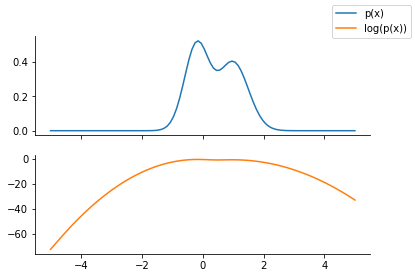
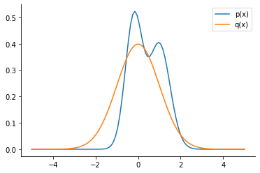
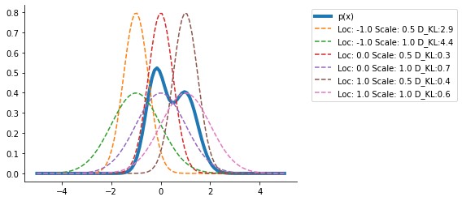
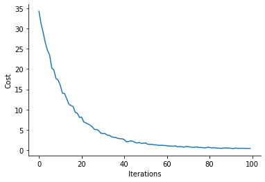
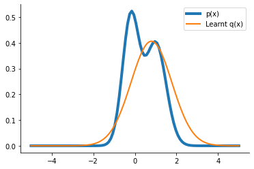

Variational Inference from scratch in JAX
Contents
Variational Inference from scratch in JAX#
try:
import jax
import jax.numpy as jnp
except:
ModuleNotFoundError
%pip install jax jaxlib
import jax
import jax.numpy as jnp
try:
from tensorflow_probability.substrates import jax as tfp
except:
ModuleNotFoundError
%pip install tensorflow_probability
from tensorflow_probability.substrates import jax as tfp
try:
import optax
except:
ModuleNotFoundError
%pip install optax
import optax
try:
from rich import print
from rich.table import Table
except:
ModuleNotFoundError
%pip install rich
from rich import print
from rich.table import Table
import matplotlib.pyplot as plt
import seaborn as sns
import warnings
warnings.filterwarnings("ignore")
dist = tfp.distributions
key = jax.random.PRNGKey(0)
WARNING:absl:No GPU/TPU found, falling back to CPU. (Set TF_CPP_MIN_LOG_LEVEL=0 and rerun for more info.)
Unnormalized distribution to be approximated#
p = dist.MixtureSameFamily(
mixture_distribution=dist.Categorical(probs=jnp.array([0.5, 0.5])),
components_distribution=dist.Normal(
loc=jnp.array([-0.2, 1]), scale=jnp.array([0.4, 0.5]) # One for each component.
),
)
x = jnp.linspace(-5.0, 5.0, 100)
fig, ax = plt.subplots(nrows=2, sharex=True)
ax[0].plot(x, p.prob(x), label="p(x)", color="C0")
ax[1].plot(x, p.log_prob(x), label="log(p(x))", color="C1")
fig.legend()
sns.despine()

Computing KL-divergence#
q = dist.Normal(loc=0.0, scale=1.0)
plt.plot(x, p.prob(x), label="p(x)", color="C0")
plt.plot(x, q.prob(x), label="q(x)", color="C1")
plt.legend()
sns.despine()

try:
dist.kl_divergence(p, q)
except Exception as e:
print(e)
No KL(distribution_a || distribution_b) registered for distribution_a type MixtureSameFamily and distribution_b type Normal
Monte Carlo Sampling#
def kl_via_sampling(p, q, n_samples=1000):
key = jax.random.PRNGKey(1)
# Get samples from q
sample_set = q.sample(
seed=key,
sample_shape=[
n_samples,
],
)
# Use the definition of KL-divergence
return jnp.mean(q.log_prob(sample_set) - p.log_prob(sample_set))
klv = kl_via_sampling(p, q)
klv
DeviceArray(0.7333999, dtype=float32)
plt.plot(x, p.prob(x), label="p(x)", lw=4)
out = {}
for loc in [-1.0, 0.0, 1.0]:
out[loc] = {}
for scale in [0.5, 1.0]:
q_loc_scale = dist.Normal(loc=loc, scale=scale)
out[loc][scale] = kl_via_sampling(p, q_loc_scale)
plt.plot(
x,
q_loc_scale.prob(x),
label=f"Loc: {loc} Scale: {scale} D_KL:{out[loc][scale]:0.1f}",
ls="--",
)
plt.legend(bbox_to_anchor=(1.04, 1), loc="upper left")
sns.despine()

Clearly, the <loc = 0., scale = 0.5> seems the closest from the range of distributions we have tried.
Reparameterization#
We use the following concept:
We parameterize q via its parameters (which we now learn)
We generate the samples from a standard normal distribution and then rescale them for q’s location and scale
Our KL-divergence and hence the loss is a function of the parameters of q and thus we can use autograd functionality
def kl_reparam(p, q_loc, q_scale, n_samples=1000):
key = jax.random.PRNGKey(1)
q = dist.Normal(loc=q_loc, scale=q_scale)
std_normal = dist.Normal(loc=0.0, scale=1.0)
sample_set = std_normal.sample(
seed=key,
sample_shape=[
n_samples,
],
)
sample_set = q_loc + q_scale * sample_set
return jnp.mean(q.log_prob(sample_set) - p.log_prob(sample_set))
klv_rep = kl_reparam(p, 0.0, 1.0)
klv_rep, klv
(DeviceArray(0.7333999, dtype=float32), DeviceArray(0.7333999, dtype=float32))
We can confirm that the KL-divergence we obtain via generating samples directly from q or via generating samples from standard normal and then scaling are the same
Optimizing the ELBO#
I first redefine the function to make use of a dictionary instead of passing them as separate arguments.
@jax.jit
def kl_reparam(p, params, n_samples=1000, key = jax.random.PRNGKey(1)):
q_loc, q_scale = params["loc"], params["scale"]
q = dist.Normal(loc=q_loc, scale=q_scale)
std_normal = dist.Normal(loc=0.0, scale=1.0)
sample_set = std_normal.sample(
seed=key,
sample_shape=[
n_samples,
],
)
sample_set = q_loc + scale * sample_set
return jnp.mean(q.log_prob(sample_set) - p.log_prob(sample_set))
grad_loss = jax.grad(kl_reparam, argnums=(1))
params = {"loc": jnp.array([5.0]), "scale": jnp.array([1.0])}
grad_theta_val = grad_loss(p, params)
grad_theta_val
{'loc': DeviceArray([15.805946], dtype=float32),
'scale': DeviceArray([0.00562394], dtype=float32)}
optimizer = optax.sgd(learning_rate=0.01)
opt_state = optimizer.init(params)
import numpy as np
num_iter = 100
costs = np.empty(num_iter)
key = jax.random.PRNGKey(1)
for i in range(num_iter):
key, subkey = jax.random.split(key)
cost_val = kl_reparam(p, params, key = subkey)
costs[i] = cost_val
grads = grad_loss(p, params)
updates, opt_state = optimizer.update(grads, opt_state)
params = optax.apply_updates(params, updates)
plt.plot(costs)
plt.xlabel("Iterations")
plt.ylabel("Cost")
sns.despine()

params
{'loc': DeviceArray([0.79362154], dtype=float32),
'scale': DeviceArray([0.9817765], dtype=float32)}
q_learnt = dist.Normal(loc=params["loc"], scale=params["scale"])
plt.plot(x, p.prob(x), label="p(x)", lw=4)
plt.plot(x, q_learnt.prob(x), label="Learnt q(x)", lw=2)
plt.legend()
sns.despine()
